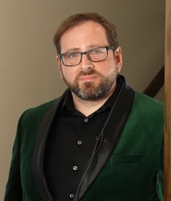

Scott Braden Cawthon (Houston, Texas; 26 de julio de 1971) es un desarrollador de videojuegos, escritor y productor estadounidense.2 Es el creador de la franquicia Five Nights at Freddy's, el cual empezó con el desarrollo del juego epónimo en 2014. Lanzado independientemente, el juego obtuvo rápidamente popularidad y un estatus de culto. Cawthon desarrolló 10 juegos en general serie de 2014 hasta su retiro en 2021, además de tres spin-offs. También escribió varias historias basadas en Five Nights at Freddy's, incluyendo la novela Los Ojos de Plata y una película estrenada en 2023.
Pincha en la imagen ;)